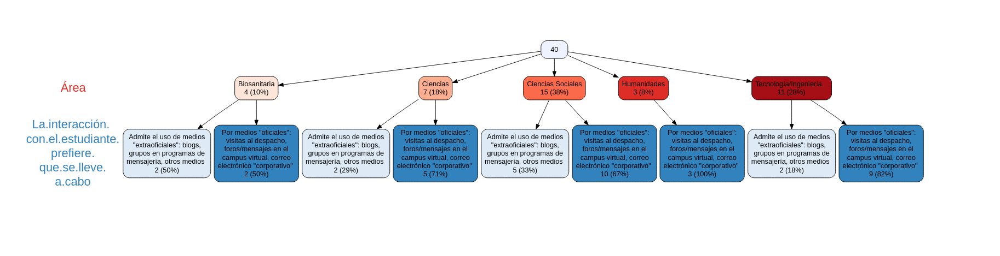
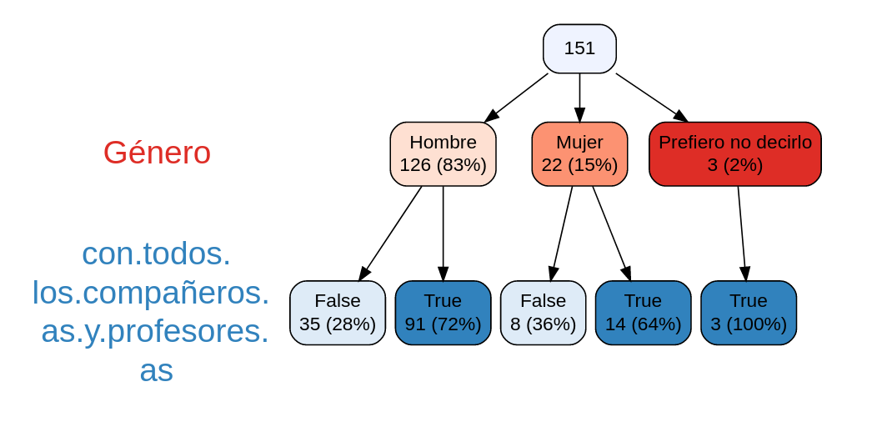
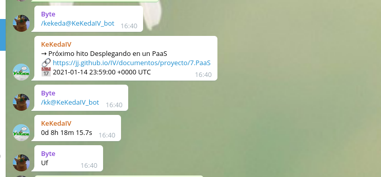

Chatbots en educación
IX convocatoria de actividades de formación
docente en centros, titulaciones y
departamentos
Docente en UGR desde 1988
No se enseña, se aprende
¿Cómo se enseña?

... Igual que se hacía en los 90
Área biosanitaria: la diferencia

El estudiante debe ir primero
¿Qué opina el estudiante?

Ventajas del aprendizaje asíncrono
Flexibilidad
Auto-administración
Conciliación
Medios para conseguir asincronía
Uso de sistemas de
mensajería
Grabaciones
Uso de chatbots
Differ.chat: Mensajería con
chatbots integrados
Gratis mientras dure Edubots.
Mi experiencia con los bots
Principalmente: descargar
al profesor de trabajo
Kekeda

Toi

Toi check-in
Para pasar lista,
almacena en un fichero los nombres de las
personas que han asistido a clase
Chatbots: un mundo de posibilidades
Concretemos en una dinámica
de clase